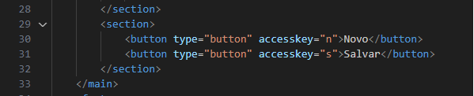

Atributo global - Accesskey
Este atributo global serve para criar uma tecla de atalho ou uma tecla
de acesso a algum elemento dentro de html. são mais usados em botões.
As teclas de atalho mudam dependendo do blauser usado. para
resolver essas problema deve-se usar o javascript. no chrome o atalho
é: ALT + n/s
Codigo:
